소방설비기사(전기분야) (2011-03-20 기출문제)
1과목: 소방원론
1. 소화기구(자동식소화기 및 자동확산소화용구, 고체 에어로졸 자동소화기를 제외한다.)는 바닥으로부터 높이 몇 m 이하의 곳에 비치하여야 하는가?
- 0.5
- 1.0
- 1.5
- 2.0
(정답률: 73%)

2. 불연성기체나 고체 등으로 연소물을 감싸 산소공급을 차단하는 소화방법은?
- 질식소화
- 냉각소화
- 연쇄반응차단소화
- 제거소화
(정답률: 88%)
3. BLEVE 현상을 가장 옳게 설명한 것은?
- 물이 뜨거운 기름표면 아래서 끓을 때 화재를 수반하지 않고 over flow 되는 현상
- 물이 연소류 뜨거운 표면에 들어갈 때 발생되는 over flow 현상
- 탱크 바닥에 물과 기름의 에멀젼이 섞여 있을 때 물의 비등으로 인하여 급격하게 over flow 되는 현상
- 탱크 주위 화재로 탱크 내 인화성 액체가 비등하고 가스부분의 압력이 상승하여 탱크가 파괴되고 폭발을 일으키는 현상
(정답률: 78%)
4. 소화방법 중 제거소화에 해당되지 않는 것은?
- 산불이 발생하면 화재의 진행방행을 앞질러 벌목함
- 방안에서 화재가 발생하면 이불이나 담요로 덮음
- 가스 화재시 밸브를 잠궈 가스흐름을 차단함
- 불타고 있는 장작더미 속에서 아직 타지 않은 것을 안전한 곳으로 운반
(정답률: 90%)
5. 화재의 소화원리에 따른 소화방법의 적용이 잘못된 것은?
- 냉각소화 : 스프링클러설비
- 질식소화 : 이산화탄소소화설비
- 제거소화 : 포소화설비
- 억제소화 : 할로겐화합물소화설비
(정답률: 87%)
6. 이산화탄소에 대한 설명으로 틀린것은?
- 불연성 가스로서 공기보다 무겁다.
- 임계온도는 97.5℃ 이다.
- 고체의 형태로 존재할 수 있다.
- 상온, 상압에서 기체 상태로 존재한다.
(정답률: 79%)
7. 화재에 관한 설명으로 옳은 것은?
- PVC 저장창고에서 발생한 화재는 D급화재이다.
- PVC 저장창고에서 발생한 화재는 B급화재이다.
- 연소의 색상과 온도와의 관계를 고려할 때 일반적으로 암적색보다는 휘적색의 온도가 높다.
- 연소의 색상과 온도와의 관계를 고려할 때 일반적으로 휘백색보다는 휘적색의 온도가 높다.
(정답률: 82%)
8. 고층건축물에서 연기의 제어 및 파단은 중요한 문제이다. 연기제어의 기본방법이 아닌 것은?
- 희석
- 차단
- 배기
- 복사
(정답률: 84%)
9. 가연물의 주된 연소형태를 틀리게 나타낸 것은?
- 목재 : 표면연소
- 섬유 : 분해요소
- 유황 : 증발연소
- 피크린산 : 자기연소
(정답률: 63%)
10. 다음 연소생성물중 인체에 가장 독성이 높은 것은?
- 이산화탄소
- 일산화탄소
- 황화수소
- 포스겐
(정답률: 77%)
11. 목재건물의 화재성상은 내화건물에 비하여 어떠한가?
- 저온장기형이다,
- 저온단기형이다.
- 고온장기형이다.
- 고온단기형이다.
(정답률: 82%)
12. 다음 중 인화점이 가장 낮은 물질은?
- 산화프로필렌
- 이황화탄소
- 메틸알코올
- 등유
(정답률: 60%)
13. 황린에 대한 설명으로 틀린 것은?
- 발화점이 매우 낮아 자연발화의 위험이 높다.
- 자연발화 방지를 위해 강알칼리수용액에 저장한다.
- 독성이 강하고 지정수량이 20kg 이다.
- 연소시 오산화인의 흰 연기를 낸다.
(정답률: 74%)
14. 제 1종 분말소화약제가 요리용 기름이나 지방질 기름의 화재시 소화효과가 탁월한 이유에 대한 설명으로 가장 옳은 것은?
- 비누화 반응을 일으키기 때문이다.
- 요오드화 반응을 일으키기 때문이다.
- 브롬화 반응을 일으키기 때문이다.
- 질화 반응을 일으키기 때문이다.
(정답률: 80%)
15. 자연발화가 원인이 되는 열의 발생 형태가 다른 것은?
- 기름종이
- 고무분말
- 석탄
- 퇴비
(정답률: 62%)
16. 물리적 방법에 의한 소화라고 볼 수 없는 것은?
- 부촉매의 연쇄반응 억제작용에 의한 방법
- 냉각에 의한 방법
- 공기와의 접촉 차단에 의한 방법
- 가연물 제거에 의한 방법
(정답률: 85%)
17. 화재의 일반적 특성이 아닌 것은?
- 확대성
- 정형성
- 우발성
- 불안정성
(정답률: 87%)
18. 화재발생시 피난기구로 직접 활용할 수 없는 것은?
- 완강기
- 무선통신보조설비
- 피난사다리
- 구조대
(정답률: 88%)
19. 건물화재시 패닉(panic)의 발생원인과 직접적인 관계가 없는 것은?
- 연기에 의한 시계 제한
- 유독가스에 의한 호흡 장애
- 외부와 단절되어 고립
- 건물의 불연 내장재
(정답률: 87%)
20. 제1종 분말소화약제의 열분해 반응식으로 옳은 것은?
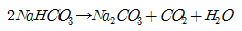
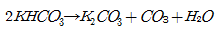
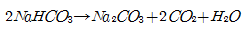
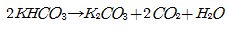
(정답률: 74%)
2과목: 소방전기회로
21. 어떤 측정계기의 지시값을 M, 참값을 T라 할 때 보정률은 몇 [%] 인가?
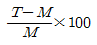
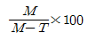
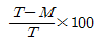
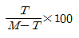
(정답률: 80%)
22. 42.5[mH]의 코일에 60[Hz] 100[V]의 교류를 가할 때 유도리액턴스 [Ω]는?
- 16
- 20
- 32
- 43
(정답률: 60%)
23. 일정한 저항에 가해지고 있는 전압을 3배로 하면 소비전력은?
- 1/3
- 3
- 6
- 9
(정답률: 68%)
24. 단상변압기 3대를 △결선으로 운전하는 도중에 1대의 변압기가 고장이나 V결선으로 운전하는 경우 고장 전에 비해 출력은 어떻게 되는가?
- 3
- √3
- 1/√3
- 2
(정답률: 67%)
25. 두 벡터 A1=3+j2, A2=2+j3 가 있다. A=A1×A2라고 할 때 A는?
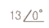
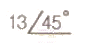
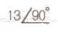
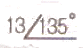
(정답률: 56%)
26. 50V를 가하여 30C의 전기량을 3초 동안 이동시켰다. 이때의 전력은 몇 [kW] 인가?
- 0.5
- 1
- 1.5
- 2
(정답률: 54%)
27. 직류 발전기의 자극수 4, 전기자 도체 수 500, 각 자극의 유효자속 수 0.01Wb, 회전수 900rpm인 경우 유기 기전력은 얼마인가? (단, 전기자 권수는 파권)
- 130[V]
- 140[V]
- 150[V]
- 160[V]
(정답률: 55%)
28. 직류전동기 속도제어 중 전압제어방식이 아닌 것은?
- 워드 레오너드방식
- 일그너방식
- 직병렬법
- 정출력제어방식
(정답률: 45%)
29. 0.5kVA의 수신기용 변압기가 있다. 변압기의 철손이 7.5, 전부하동손이 16W 이다. 화재가 발생하여 처음 2시간은 전부하 운전되고, 다음 시간은 1/2 의 부하가 걸렸다고 한다. 이 4시간에 걸친 전손실 전력량은 약 몇 [Wh] 인가?
- 70
- 76
- 82
- 94
(정답률: 43%)
30. 제어량이 온도, 압력, 유량 및 액면 등과 같은 일반공업량일 때의 제어는?
- 공정제어
- 프로그램제어
- 시퀀스제어
- 추종제어
(정답률: 67%)
31. 그림과 같은 정류회로에서 부하 R에 흐르는 직류전류의 크기는 약 몇 A 인가? (단, V=200V, R=20√2이다.)
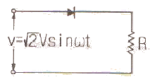
- 3.2
- 3.8
- 4.4
- 5.2
(정답률: 46%)
32. 논리식 A(A+B)를 간단히 하면?
- A
- B
- A+B
- AㆍB
(정답률: 65%)
33. 광전자 방출현상에서 방출된 에너지는 무엇에 비례하는가?
- 빛의 세기
- 빛의 파장
- 빛의 속도
- 빛의 이온
(정답률: 67%)
34. 아이오드를 사용한 정류회로에서 과대한 부하전류에 의하여 다이오드가 파손될 우려가 있을 경우의 적당한 대책은?
- 다이오드를 직렬로 추가한다.
- 다이오드를 병렬로 추가한다.
- 다이오드는 양단에 적당한 값의 저항을 추가한다.
- 다이오드의 양단에 적당한 값의 콘덴서를 추가한다.
(정답률: 76%)
35. 실리콘 정류 소자인 SCR의 특징을 잘못 나타낸 것은?
- 과전압에 비교적 약하다.
- 게이트에 신호를 인가한 때부터 도통시까지 시간이 짧다.
- 순방향 전압강하는 크게 발생한다.
- 열의 발생이 적은 편이다.
(정답률: 64%)
36. 피드백 제어장치에 속하지 않는 요소는?
- 설정부
- 검출부
- 조절부
- 전달부
(정답률: 55%)
37. 역률을 개선하기 위한 진상용 콘덴서의 설치 개소로 가장 알맞은 것은?
- 수전점
- 고압모선
- 변압기 2차측
- 부하와 병렬
(정답률: 61%)
38. 전류변환형 센서가 아닌 것은?
- 광전자 방출현상을 이용한 센서
- 전리현상에 의한 전리형 센서
- 전기화학형 (안트로메트리형)센서
- 광전형센서
(정답률: 46%)
39. 시퀀스 제어계의 신호전달계통도이다. 빈칸에 알맞은 용어는?
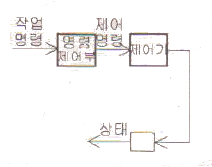
- 제어대상
- 제어장치
- 제어요소
- 제어량
(정답률: 69%)
40. 지시계기에 대한 동작원리가 옳지 않은 것은?
- 열전대형 계기 - 정전작용
- 유도형 계기 - 회전 자장 및 이동자장
- 전류력계형 계기 - 코일의 자계
- 열선형 계기 - 열선의 팽창
(정답률: 69%)
3과목: 소방관계법규
41. 소방시설공사업자는 소방시설공사 결과 소방시설에 하자가 있는 경우 하자보수를 하여야 한다. 다음 중 하자보수를 하여야 하는 소방시설과 소방시설별 하자보수보증기간이 잘못 나열된 것은?
- 유도등 : 2년
- 자동화재탐지설비 : 3년
- 스프링클러설비 : 3년
- 무선통신보조설비 : 3년
(정답률: 73%)
42. 위험물 간이저장탱크 설비기준에 대한 설명으로 맞는 것은?
- 통기관은 지름 최소 40mm 이상으로 한다.
- 용량은 600L 이하 이어야 한다.
- 탱크의 주위에 너비는 최소 1.5m 이상의 공지를 두어야 한다.
- 수압시험은 50kpa 의 압력으로 10분간 실시하여 새거나 변형되지 아니하여야 한다.
(정답률: 45%)
43. 다음 중 경보설비에 해당되지 않는 것은?
- 자동화재탐지설비
- 무선통신보조설비
- 통합감시시설
- 누전경보기
(정답률: 69%)
44. 다음 용어 설명 중 옳은 것은?
- “소방시설”이라 함은 소화설비ㆍ경보설비ㆍ피난설비ㆍ소화용수설비 그 밖에 소화활동설비로서 대통령령이 정하는 것을 말한다.
- “소방시설등”이라 함은 소방시설과 비상구 그 밖에 소방 관련 시설로서 행정안전부장관령이 정하는 것을 말한다.
- “특정소방대상물”이라 함은 소방시설을 설치하여야 하는 소방대상물로서 소방방재청장령이 정하는 것을 말한다.
- “소방용기계ㆍ기구”라 함은 소화기(消火器)ㆍ소화약제(消化藥劑)ㆍ방염도료(防炎塗料) 그 밖에 소장시설을 구성하는 기기로서 시ㆍ도지사령이 정하는 것을 말한다.
(정답률: 71%)
45. 소화활동 및 화재조사를 원활히 수행하기 위해 화재현장에 출입을 통제하기 위하여 설정하는 것은?
- 화재경계지구 지정
- 소방활동구역 설정
- 방화제한구역 설정
- 화재통제구역 설정
(정답률: 60%)
46. 다음 특정소방대상물 중 자동식 소화기를 설치하여야 하는 것은?(오류 신고가 접수된 문제입니다. 반드시 정답과 해설을 확인하시기 바랍니다.)(관련 규정 개정전 문제로 여기서는 기존 정답인 1번을 누르면 정답 처리됩니다. 자세한 내용은 해설을 참고하세요.)
- 아파트
- 지하가 중 터널로서 길이가 1000m 이사인 터널
- 지정문화재 및 가스시설
- 항공기 격납고
(정답률: 62%)
47. 화재에 관한 위험경보를 발령할 수 있는 자는?
- 행정안전부장관
- 소방서장
- 시ㆍ도지사
- 소방방재청장
(정답률: 57%)
48. 소방용기계ㆍ기구에 해당되는 것은?
- 휴대용 비상조명등
- 방염액 및 방염도료
- 이산화탄소 소화약제
- 화학반응식 거품소화기
(정답률: 50%)
49. 다음 중 소방기본법 시행령에서 규정하는 화재경계지구의 지정대상지역에 해당되는 기준과 가장 거리가 먼 것은?
- 시장지역
- 공장ㆍ창고가 밀집한 지역
- 소방시설ㆍ소방용수시설 또는 소방출동로가 없는 지역
- 금융업소가 밀집한 지역
(정답률: 79%)
50. 특정소방대상물 중 근린생활시설과 가장 거리가 먼 것은?
- 안마시술소
- 찜질방
- 한의원
- 무도학원
(정답률: 54%)
51. 다음 중 소화활동설비가 아닌 것은?
- 제연설비
- 연결송수관설비
- 비상방송설비
- 연소방지설비
(정답률: 67%)
52. 다음 중 소방법상의 소방대상물이 아닌 것은?
- 산림
- 선박건조구조물
- 항공기
- 차량
(정답률: 56%)
53. 방염업의 등록 결격사유에 해당하지 않는 것은?
- 금치산자
- 방염업의 등록이 취소된 날로부터 3년이 지난 자
- 위험물안전관리법에 따른 금고 이상의 형의 집행유예 선고를 받고 그 유예기간 중에 있는 자
- 위험물안전관리법에 따른 금고 이상의 실형의 선고를 받고 그 집행이 종료되거나 집행이 면제된 날로부터 2년이 지나지 아니한 자
(정답률: 74%)
54. 다른 시ㆍ도간 소방업무에 관해 상오응원협정을 체결하고자 할 때 포함되어야 할 사항이 아닌 것은?
- 응원출동의 요청방법
- 소방신호방법의 통일
- 소요경비의 부담에 관한 내용
- 응원출동 대상지역 및 규모
(정답률: 61%)
55. 소방관서에서 실시하는 화재원인조사 범위에 해당하는 것은?
- 소방활동 중 발생한 사망자 및 부상자
- 소방시설의 사용 또는 작동 등의 상황
- 열에 의한 탄화, 용융, 파손 등의 피해
- 소방활동 중 사용된 물로 인한 피해
(정답률: 48%)
56. 특정소방대상물의 관계인은 방화관리자가 해임한 날부터 며칠 이내에 선임하여야 하는가?
- 10일
- 14일
- 30일
- 90일
(정답률: 71%)
57. 특수가연물의 저장 및 취급의 기준을 위반한 자가 2차 위반시 과태료 금액은?
- 20만원
- 50만원
- 100만원
- 150만원
(정답률: 46%)
58. 다음 중에서 방화관리자를 두어야 할 특정소방대상물로서 1급 방화관리대상물이 아닌 것은?
- 지하구
- 연면적 15.000m2 이상인 것
- 건물의 층 수가 11층 이상인 것
- 1천 톤 이상의 가연성가스 저장 시설
(정답률: 57%)
59. 제4류 위험물로서 제1석유류안 수용성 액체의 지정수량은 몇 리터인가?
- 100
- 200
- 300
- 400
(정답률: 63%)
60. 특정소방대상물의 증축 또는 용도변경 시의 소방시설기준적용의 특례에 관한 설명 중 옳지 않은 것은?
- 중축되는 경우에는 기존부분을 포함한 전체에 대하여 증축 당시의 소방시설 등의 설치에 관한 대통령령 또는 화재안전기준을 적용한다.
- 증축 시 기존부분과 증축되는 부분이 내화구조로 된 바닥과 벽으로 구획되어 있는 경우에는 기존부분에 대하여는 증축당시의 소방시설 등의 설치에 관한 대통령령 또는 화재안전기준을 적용하지 아니한다.
- 용도 변경되는 경우에는 기존 부분을 포함할 전체에 대하여 용도 변경 당시의 소방시설 등의 설치에 관한 대통령령 또는 화재안전기준을 적용한다.
- 용도 변경 시 특정소방대상물의 구조ㆍ설비가 화재연소 확대요인이 적어지거나 피난 또는 화재진압활동이 쉬워지도록 용도 변경되는 경우에는 전체에 용도변경되기 전의 소방시설 등의 설치에 관한 대통령령 또는 화재안전기준을 적용한다.
(정답률: 29%)
4과목: 소방전기시설의 구조 및 원리
61. 다음 수신기의 일반적인 구조 및 기능 중에서 옳은 것은?
- 예비전원회로에는 단락사고 등으로부터 보호하기 위한 누전차단기를 성치하여야 한다.
- 주전원의 양극을 각각 개폐할 수 있는 전원스위치를 설치하여야 한다.
- 외함은 단단한 가연성 재질을 사용하여 제작하여야 한다.
- 정격전압이 60V를 넘는 급속제 외함에는 접지단자를 설치하여야 한다.
(정답률: 62%)
62. 누전경보기 수신부의 절연저항은 최소 몇 [MΩ]이상 이어야 하는가?
- 0.1
- 3
- 5
- 100
(정답률: 59%)
63. 다음 중 감지기의 종별이 옳지 않은 것은?
- 보상식 스포트형 감지기는 차동식스포트형 감지기와 정온식스포트형 감비기의 성능을 겸한 것
- 보상식 스포트형 감지기는 차동식스포트형 감지기 또는 정온식스포트형 감지기의 성능 중 어느 한 기능이 작동되면 작동신호를 발하는 것
- 이온화식 김지기는 주위의 공기가 일정한 온도를 포함하게 되는 경우에 작동하는 것
- 이온화식 감지기는 일국소의 연기에 의하여 이온전류가 변화하여 작동하는 것
(정답률: 62%)
64. 운동시설에 설치하지 아니할 수 있는 유도등은?
- 대형 피난구 유도등
- 중형 피난구 유도등
- 통로 유도등
- 객석 유도등
(정답률: 69%)
65. 다음 중 누전경보기의 설치방법으로 옳지 않은 것은?
- 경계전로의 정격전류가 60A를 초과하는 전로에 있어서는 1급 누전경보기를 설치할 것
- 경계전로의 전격전류가 60A 이하의 전로에 있어서는 2급 또는 3급 누전경보기를 설치할 것
- 변류기를 옥외의 전로에 설치하는 경우에는 옥외형의 것을 설치할 것
- 변류기는 소방대상물의 형태, 인입선의 시설방법 등에 따라 옥외 인입선의 제1지점 부하측의 점검이 쉬운 위치에 설치할 것
(정답률: 62%)
66. 다음 중 무선통신보조설비의 무선기기 접속단자의 설치기준에 접합하지 않는 것은?
- 단자의 보호함의 표면에 “무선기 접속단자”라고 표시한 표지를 한다.
- 수위실 등 상시 사람이 근무하는 장소에 설치한다.
- 지상에 설치하는 접속단자는 수평거리 50m 마다 설치한다.
- 바닥으로부터 높이 0.8m 이상 1.5m 이하의 위치에 설치한다.
(정답률: 71%)
67. 바닥면적이 450m2 일 경우 단독경보형감지기의 최소 설치 갯수는?
- 1개
- 2개
- 3개
- 4개
(정답률: 78%)
68. 통로유도등 설치기준으로 옳지 않은 것은?
- 복도통로 유도등은 구부러진 모퉁이 및 보행거리 20m마다 설치한다.
- 복도통로 유도등을 지하상가에 설치하는 경우에는 복도ㆍ통로 중앙부분의 바닥에 설치한다.
- 계단통로 유도등은 바닥으로부터 높이 1.5m 이하의 위치에 설치한다.
- 계단통로 유도등은 각층의 경사로창 또는 계단창마다 설치한다.
(정답률: 60%)
69. 다음 감지기 중에서 불을 사용하는 설비의 불꽃이 노출되는 장소에 적응하는 감지기는 어느 것인가?
- 차동식분포형감지기
- 보상식스포트형감지기
- 정온식감지기
- 불꽃감지기
(정답률: 39%)
70. 자동화재탐지설비에 있어서 부착높이가 20m 이상에 설치할 수 있는 감지기는?
- 연기복합형
- 불꽃감지기
- 차동식 분포형
- 이온화식 1종 또는 2종
(정답률: 65%)
71. 자동화재탐지설비의 수신기는 몇 층 이상의 소방대상물일 경우 발신기와 전화통화 가능한 것으로 설치해야 하는가?
- 7층 이상
- 5층 이상
- 4층 이상
- 2층 이상
(정답률: 74%)
72. 자동화재탐지설비의 음향장치 설치기준 중 맞는 것은?
- 지구음향장치는 당해 소방대상물의 각 부분으로부터 하나의 음향장치까지의 수평거리가 25m 이하가 되도록 한다.
- 정격전압의 70%전압에서 음향을 발할 수 있어야 한다.
- 음량은 부착된 음향장치의 중심으로부터 1m 떨어진 위치에서 80dB 이상이 되도록 하여야 한다.
- 5층(지하층 제외)이상으로서 연면적이 3000m2를 초과하는 소방대상물에 있어서는 2층 이상의 층에서 발화시 발화층 및 직하층에 경보를 발하여야 한다.
(정답률: 69%)
73. 비상방송설비 음향장치의 음량조정기를 설치하는 경우 음량조정기의 배선은?
- 단선식
- 2선식
- 3선식
- 4선식
(정답률: 81%)
74. 예비전원을 내장하는 비상조명등에는 평상시 점등여부를 확인할 수 있도록 반드시 설치하여야 하는 것은?
- 충전기
- 리액터
- 점검스위치
- 정전콘덴서
(정답률: 77%)
75. 다음 중 무선통신보조설비의 주회로 전원이 정상인지 여부를 확인하기 위해 증폭기 전면에 설치하는 것은?
- 전압계 및 전류계
- 전압계 및 표시등
- 회로시험계
- 전류계
(정답률: 80%)
76. 유도표지는 각층마다 복도 및 통로의 각 부분으로부터 하나의 유도표지까지의 보행거리가 몇 m 마다 설치하여야 하는가? (단, 계단에 설치하는 것은 제외한다.)
- 5m 이하
- 10m 이하
- 15m 이하
- 20m 이하
(정답률: 62%)
77. 자동화재속보설비의 속보기는 자동화재 탐지설비로부터 작동신호를 수신하여 몇 초 이내에 소방관서에 자동적으로 신호를 발하여 통보하여야 하는가?
- 10초
- 20초
- 30초
- 60초
(정답률: 45%)
78. 자동화재탐지설비의 감지기 설치기준에 적합하지 않은 것은?
- 감지기(차동식분포형의 것 및 특수한 것은 제외한다.)는 실내로의 공기유입구로부터 3m 이상 떨어진 위치에 설치한다.
- 감지기는 천장 또는 반자의 옥내에 면하는 부분에 설치한다.
- 차동식스포트형 감지기는 45° 이상 경사되지 않도록 부착한다.
- 공기과식 차동식분포형 감지기 설치시 공기관은 도중에서 분기하지 아니하도록 부착한다.
(정답률: 54%)
79. 비상전원수정설비 중 큐비클형 외함의 두께는?
- 1mm 이상 강판
- 1.2mm 이상 강판
- 2.3mm 이상 강판
- 3.2mm 이상 강판
(정답률: 48%)
80. 다음 중 무선통신보조설비의 화재안전기준에서 사용하는 용어의 정의로 올바른 것은?
- “분파기” 는 신호의 전송로가 분기되는 장소에 설치하는 장치를 말한다.
- “분배기” 는 서로 다른 주파수의 합성된 신호를 분리하시 위해서 사용하는 장치를 말한다.
- “누설동축케이블” 은 동축케이블 외부도체에 가느다란 홈을 만들어서 전파가 외부로 새어나갈 수 있도록 한 케이블을 말한다.
- “증폭기” 는 두개 이상의 입력 신호를 원하는 비율로 조합한 출력이 발생되도록 하는 장치를 말한다.
(정답률: 73%)